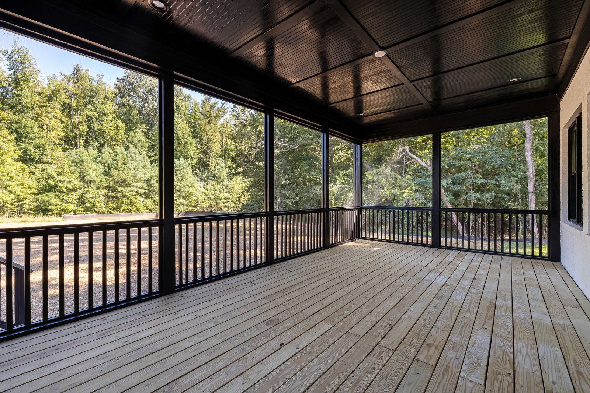
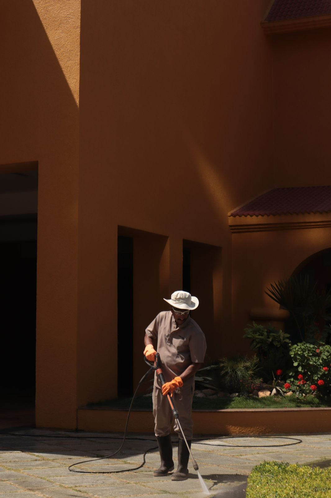
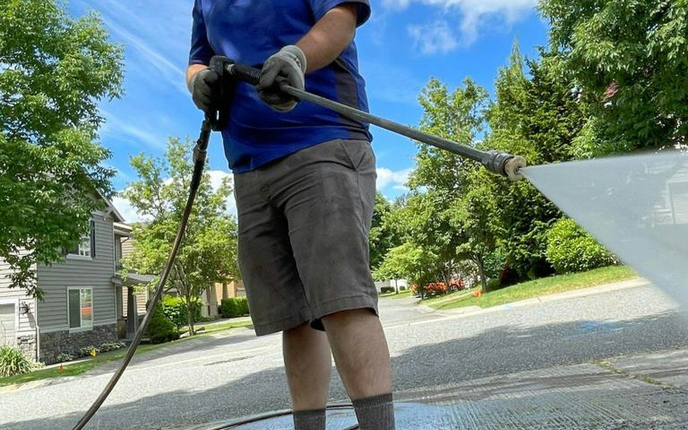
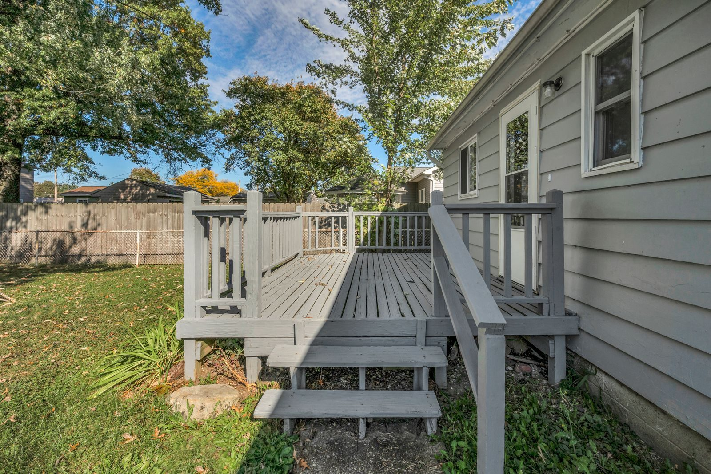
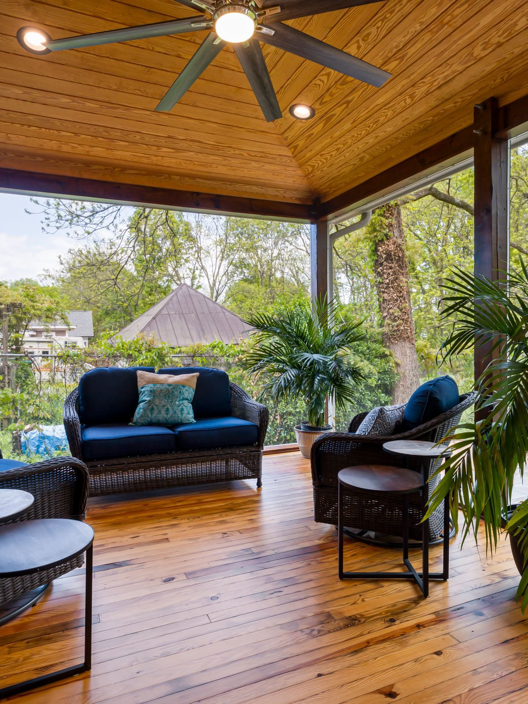

Pressure washing in Tupelo.
Sterling Pressure Washing washes house siding, driveways and walkways, decks and patios, and fences in Tupelo and nearby. Call us and tell us what needs a wash.
- Based in Tupelo, MS
- Siding, driveways, decks and fences

What needs a wash?
Pick a surface to see what we wash. Siding, driveways and walkways, decks and patios, and fences are the jobs we do.
Call us and tell us the surface and where it is.Call (662) 678 3130

How it works
Three plain steps, starting with a phone call.
Call us
Ring (662) 678 3130 and tell us what needs a wash.
Tell us about the job
The surface, about how big it is, and where it is in Tupelo or nearby.
Ask your questions
Ask what you want to know, then decide how you want to go ahead.
Based in Tupelo.
We wash siding, drives, decks and fences. In Tupelo or nearby? Give us a call.
Call (662) 678 3130- Siding
- Driveways
- Walkways
- Decks
- Patios
- Fences



Tell us what needs a wash
Use the form to tell us your name, number and what needs a wash, or call us.
We work in Tupelo and nearby.
Thanks. We have it.
We will call you back soon.
This is a sample site, so nothing was actually sent.